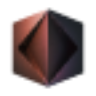

M
Mail KiwiИскусство и дизайн
Сравнивать «Mail Kiwi» с другими инструментами раздела «Искусство и дизайн» удобнее на одинаковом исходном материале.
Раздел «Искусство и дизайн»: варианты ИИ для этой задачи, описания возможностей и переходы к обзорам. Сравните несколько решений на одинаковом примере.
Создайте абстрактную композицию как визуальное направление для оформления комнаты. Опишите палитру, характер линий и основной акцент; сравните результат с фотографией пространства, рассматривая изображение как эскиз художественной идеи перед подготовкой финального файла или собственной работой.
Создай абстрактную композицию для светлой комнаты: песочный фон, глубокий синий акцент, плавные крупные формы. Без мелкого орнамента и букв, спокойный ритм, один заметный центр внимания.

Сравнивать «Mail Kiwi» с другими инструментами раздела «Искусство и дизайн» удобнее на одинаковом исходном материале.
«NailDesignPro» представлен в разделе «Искусство и дизайн». При выборе проверьте нужную операцию и условия работы с результатом.
«NailDesigns AI» представлен в разделе «Искусство и дизайн». При выборе проверьте нужную операцию и условия работы с результатом.
«Namelix» подготавливает варианты логотипов.
Сравнивать «Neighborbrite» с другими инструментами раздела «Дизайн» удобнее на одинаковом исходном материале.
«Neural Canvas» готовит визуальные материалы по заданию. Дополнительно «Neural Canvas» помогает составлять визуальные панели комикса.
Для «PandasMake» сначала определите свою задачу и требуемый результат. Карточка относится к направлению «Искусство и дизайн».
Сравнивать «Pic A Pet Name» с другими инструментами раздела «Генератор имен» удобнее на одинаковом исходном материале.
Для «Shopp Toolz» сначала определите свою задачу и требуемый результат. Карточка относится к направлению «Искусство и дизайн».
Для «Smallppt» сначала определите свою задачу и требуемый результат. Карточка относится к направлению «Искусство и дизайн».
Для «StyleGen AI» сначала определите свою задачу и требуемый результат. Карточка относится к направлению «Искусство и дизайн».
Для «Tatship» сначала определите свою задачу и требуемый результат. Карточка относится к направлению «Аватары и портреты».
«TheHomeDecorAI» представлен в разделе «Искусство и дизайн». При выборе проверьте нужную операцию и условия работы с результатом.
ThinkDiffusion предоставляет браузерный доступ к среде работы с ИИ-моделями. В наборе возможностей представлен ControlNet, а для дополнительных задач можно запускать виртуальные машины. Такое окружение позволяет работать с моделями через браузер и использовать несколько запущенных сред параллельно в рамках своих задач.
Для «Zaayve AI» сначала определите свою задачу и требуемый результат. Карточка относится к направлению «Искусство и дизайн».
Сравнивать «AI Creative Toolbox» с другими инструментами раздела «Искусство и дизайн» удобнее на одинаковом исходном материале.
«AI Tools for Designers» работает с графическими задачами дизайна.
Для «AI Website Design Agency» сначала определите свою задачу и требуемый результат. Карточка относится к направлению «Искусство и дизайн».
Сравнивать «AIFreeBox» с другими инструментами раздела «Искусство и дизайн» удобнее на одинаковом исходном материале.
Сравнивать «AiTattoo Ink» с другими инструментами раздела «Искусство и дизайн» удобнее на одинаковом исходном материале.
«Alpaca» представлен в разделе «Искусство и дизайн». При выборе проверьте нужную операцию и условия работы с результатом.
Сравнивать «AnyoneCanAI by Parallelhq» с другими инструментами раздела «Искусство и дизайн» удобнее на одинаковом исходном материале.
Сравнивать «ArtiTattoos» с другими инструментами раздела «Искусство и дизайн» удобнее на одинаковом исходном материале.
«Cast.app» представлен в разделе «Искусство и дизайн». При выборе проверьте нужную операцию и условия работы с результатом.
«Ceacle Pipeline» помогает соединить повторяемые рабочие действия.
«CGDream AI» подготавливает трёхмерные объекты. «CGDream AI» также готовит визуальные материалы по заданию.
Для «CleverAI» сначала определите свою задачу и требуемый результат. Карточка относится к направлению «Искусство и дизайн».
Сравнивать «Colorizy» с другими инструментами раздела «Искусство и дизайн» удобнее на одинаковом исходном материале.
«CreateLogo» подготавливает варианты логотипов.
Сравнивать «Creative Hub» с другими инструментами раздела «Искусство и дизайн» удобнее на одинаковом исходном материале.
«Daft Art» представлен в разделе «Искусство и дизайн». При выборе проверьте нужную операцию и условия работы с результатом.
«DesignYay» представлен в разделе «Искусство и дизайн». При выборе проверьте нужную операцию и условия работы с результатом.
«Emoji Combiner» создаёт изображения для эмоциональных сообщений.
Для «Grafychat» сначала определите свою задачу и требуемый результат. Карточка относится к направлению «Искусство и дизайн».
«Hive3» представлен в разделе «Искусство и дизайн». При выборе проверьте нужную операцию и условия работы с результатом.

Hotpot.ai объединяет графические инструменты и подготовку контента с участием ИИ. Среди возможностей есть удаление фона и восстановление снимков, а также шаблоны макетов. Создание публикаций для соцсетей и доступ через API дополняют работу над визуальными материалами пользователя.
Сравнивать «HueHive» с другими инструментами раздела «Искусство и дизайн» удобнее на одинаковом исходном материале.

«Kaedim» подготавливает трёхмерные объекты.
«Little Bro» представлен в разделе «Искусство и дизайн». При выборе проверьте нужную операцию и условия работы с результатом.
Сравнивать «Magician for Figma» с другими инструментами раздела «Дизайн» удобнее на одинаковом исходном материале.
«ManageArtworks» представлен в разделе «Искусство и дизайн». При выборе проверьте нужную операцию и условия работы с результатом.
Сравнивать «MixFlow.AI» с другими инструментами раздела «Искусство и дизайн» удобнее на одинаковом исходном материале.
Для «Open NFT» сначала определите свою задачу и требуемый результат. Карточка относится к направлению «Искусство и дизайн».
Для «Phase» сначала определите свою задачу и требуемый результат. Карточка относится к направлению «Искусство и дизайн».
Для «Prompt Generator» сначала определите свою задачу и требуемый результат. Карточка относится к направлению «Искусство и дизайн».
«PromptToComicAI» помогает составлять визуальные панели комикса.
Для «Random Daily Art AI» сначала определите свою задачу и требуемый результат. Карточка относится к направлению «Искусство и дизайн».
Rosebud AI используют для задачи: готовить трёхмерный объект для проекта. Ещё одно направление работы: создавать интерактивный сценарий.
Страница 9 из 10